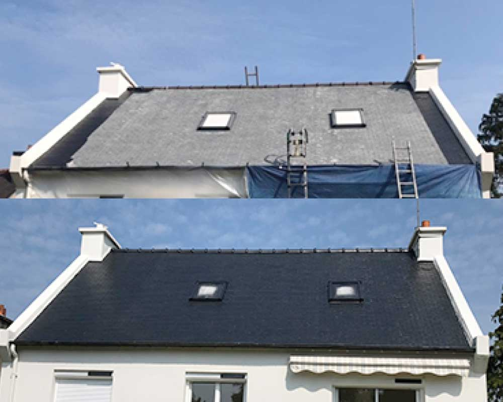
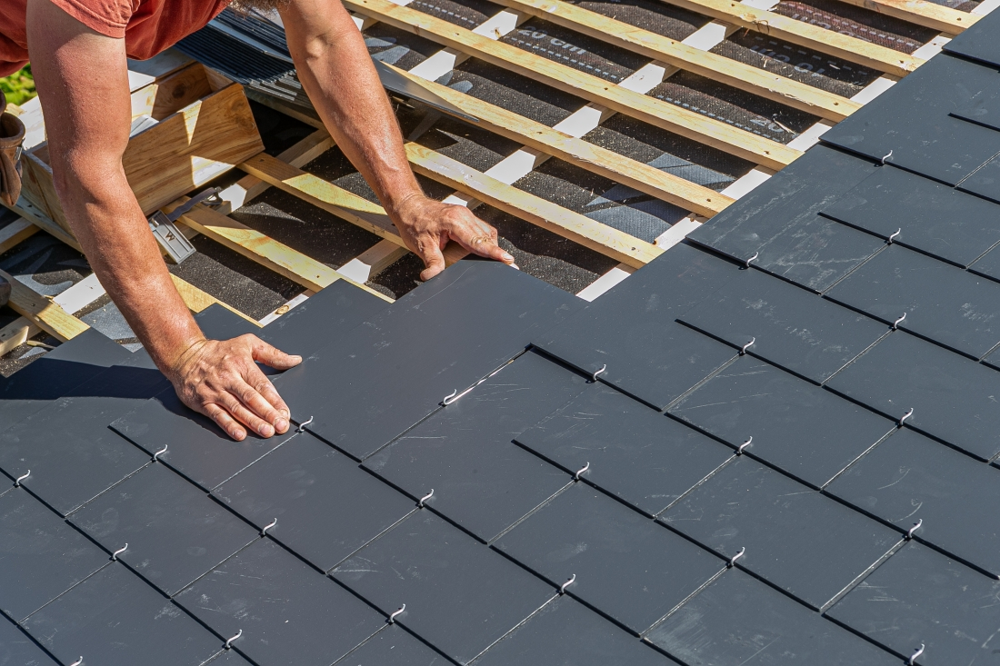
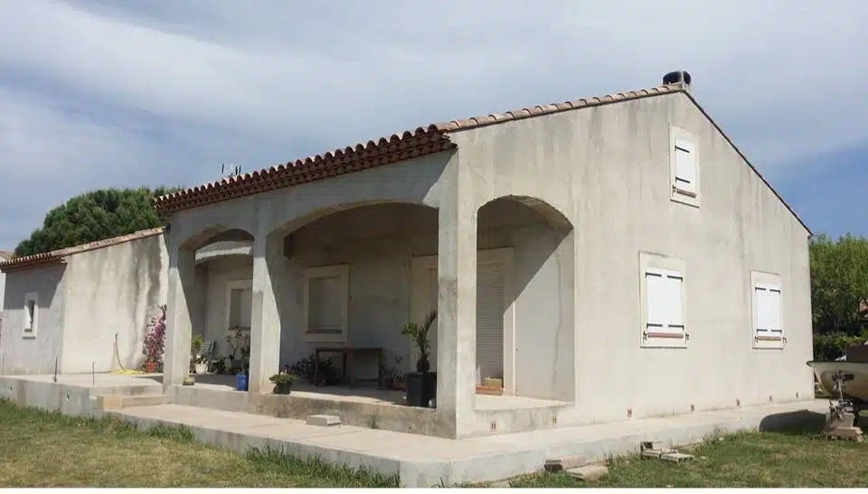
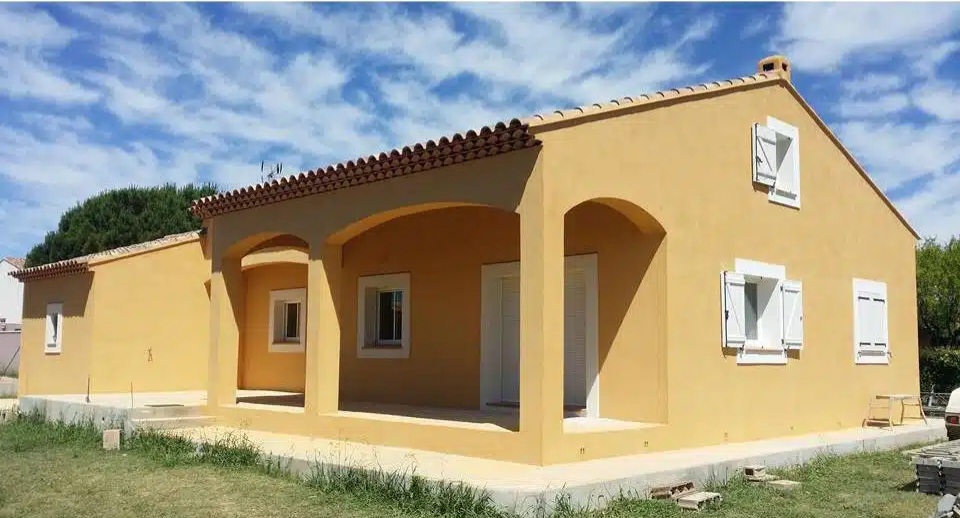
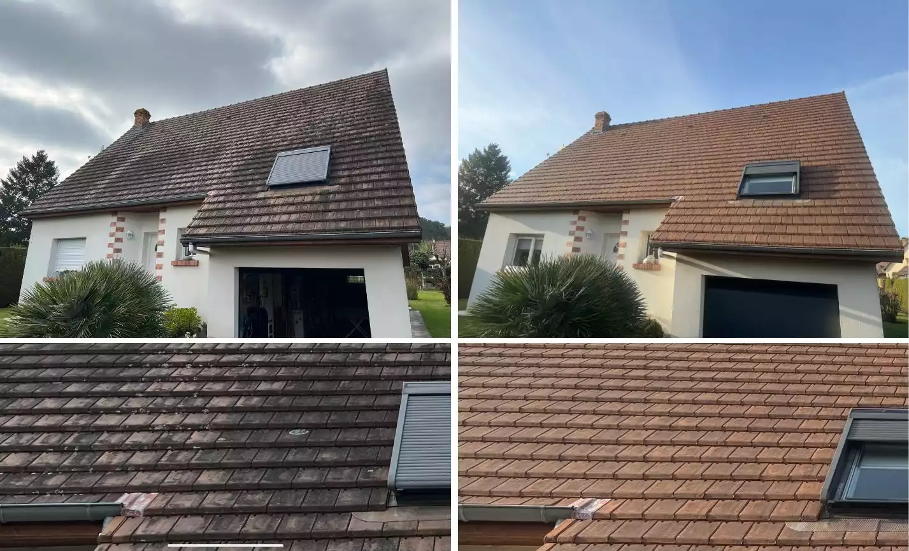
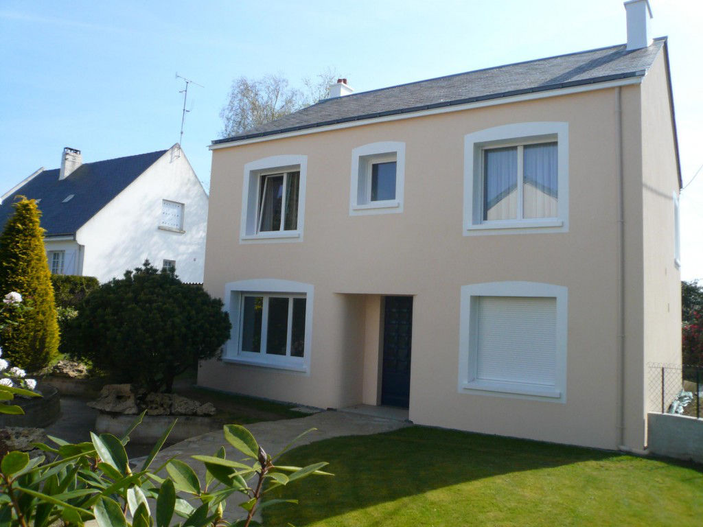
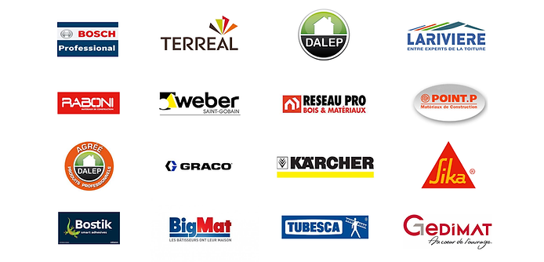

Peinture ● Couverture ● Rénovation
📞 AppelerNettoyage, rénovation, ravalement, traitement hydrofuge
Devis gratuitCK Toiture & Façade est spécialisé dans les travaux de toiture et façade dans tout le Maine-et-Loire (49). Votre façade est ternie ? Votre toiture est envahie par les mousses ? Ne laissez pas le temps dégrader votre habitation. Nous vous proposons des solutions rapides, efficaces et durables pour redonner tout son éclat à votre maison… et surtout la protéger dans le temps. Nous intervenons rapidement pour protéger et rénover votre habitation.
Les mousses et lichens retiennent l’humidité et abîment votre toiture. Nous intervenons avec des techniques efficaces pour un nettoyage en profondeur et un démoussage complet, sans abîmer vos matériaux.
✔ Élimination durable des mousses
✔ Préservation de votre toiture
✔ Traitement hydrofuge pour protéger votre toit et façade durablement.
Votre toiture est la première barrière contre les intempéries. Avec le temps, elle s’abîme, perd en efficacité et peut entraîner infiltrations, déperditions de chaleur et dégâts coûteux.
Réparation zinguerie (gouttières, descente, finitions en zinc).
Confiez votre rénovation à CK Toiture & Façade redonnez à votre habitation toute sa performance et son esthétique.
Intervention rapide et efficace.
Une façade propre et bien peinte, c’est une maison qui se démarque immédiatement. Nous réalisons une préparation complète (nettoyage, traitement, réparations) avant d’appliquer une peinture professionnelle résistante aux intempéries et aux UV.
✔ Résultat : une façade propre, moderne et durable
✔ Valorisation immédiate de votre bien immobilier.
Découvrez quelques-unes de nos interventions en toiture et façade
Peinture Toiture

Rénovation Toiture

Façade avant travaux

Façade après travaux

Démoussage Nettoyage toiture

Peinture Façade

✔ Artisan qualifié
✔ Intervention rapide
✔ Devis gratuit
✔ Travail soigné
"Travail impeccable, très professionnel. Intervention rapide sur ma toiture."
"Très bon service, fuite réparée rapidement. Je recommande."
"Entreprise sérieuse, travail propre et efficace."
Nous travaillons avec des marques et fournisseurs reconnus

Maine-et-Loire (49) Deux-Sèvres (79) Sarthe (72) Indre-Et-Loire (37) Vendée (85) Vienne (86)
Contactez-nous dès maintenant pour un devis gratuit
📞 Appeler maintenant